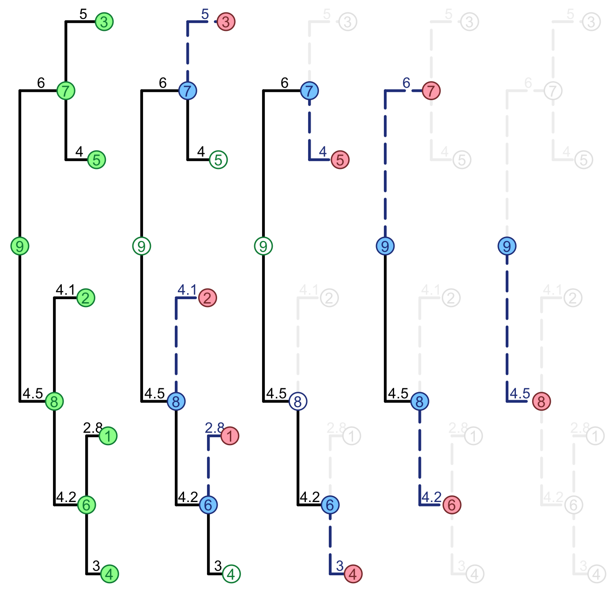

SPLITTRcppModules.Rmd#include <RcppArmadillo.h>
#include <R_ext/Rdynload.h>
#include "./AbcPMM.h"
// [[Rcpp::plugins("cpp11")]]
// [[Rcpp::plugins(openmp)]]
// [[Rcpp::depends(RcppArmadillo)]]
using namespace SPLITT;
ParallelPruningAbcPMM* CreateParallelPruningAbcPMM(
Rcpp::List const& tree, vec const& x) {
arma::umat branches = tree["edge"];
uvec br_0 = arma::conv_to<uvec>::from(branches.col(0));
uvec br_1 = arma::conv_to<uvec>::from(branches.col(1));
vec t = Rcpp::as<vec>(tree["edge.length"]);
uint num_tips = Rcpp::as<Rcpp::CharacterVector>(tree["tip.label"]).size();
uvec node_names = Seq(uint(1), num_tips);
typename ParallelPruningAbcPMM::DataType data(node_names, x);
return new ParallelPruningAbcPMM(br_0, br_1, t, data);
}
RCPP_EXPOSED_CLASS_NODECL(ParallelPruningAbcPMM::TreeType)
RCPP_EXPOSED_CLASS_NODECL(ParallelPruningAbcPMM::TraversalSpecificationType)
RCPP_EXPOSED_CLASS_NODECL(ParallelPruningAbcPMM::AlgorithmType)
RCPP_MODULE(SPLITT__AbcPMM) {
Rcpp::class_<ParallelPruningAbcPMM::TreeType::Tree> ( "SPLITT__AbcPMM__Tree" )
.property("num_nodes", &ParallelPruningAbcPMM::TreeType::Tree::num_nodes )
.property("num_tips", &ParallelPruningAbcPMM::TreeType::Tree::num_tips )
.method("LengthOfBranch", &ParallelPruningAbcPMM::TreeType::Tree::LengthOfBranch )
.method("FindNodeWithId", &ParallelPruningAbcPMM::TreeType::Tree::FindNodeWithId )
.method("FindIdOfNode", &ParallelPruningAbcPMM::TreeType::Tree::FindIdOfNode )
.method("FindIdOfParent", &ParallelPruningAbcPMM::TreeType::Tree::FindIdOfParent )
.method("OrderNodes", &ParallelPruningAbcPMM::TreeType::Tree::OrderNodes )
;
Rcpp::class_<ParallelPruningAbcPMM::TreeType>( "SPLITT__AbcPMM__OrderedTree" )
.derives<ParallelPruningAbcPMM::TreeType::Tree> ( "SPLITT__AbcPMM__Tree" )
.method("RangeIdPruneNode", &ParallelPruningAbcPMM::TreeType::RangeIdPruneNode )
.method("RangeIdVisitNode", &ParallelPruningAbcPMM::TreeType::RangeIdVisitNode )
.property("num_levels", &ParallelPruningAbcPMM::TreeType::num_levels )
.property("ranges_id_visit", &ParallelPruningAbcPMM::TreeType::ranges_id_visit )
.property("ranges_id_prune", &ParallelPruningAbcPMM::TreeType::ranges_id_prune )
;
Rcpp::class_<ParallelPruningAbcPMM::AlgorithmType::ParentType> ( "SPLITT__AbcPMM__TraversalAlgorithm" )
.property( "VersionOPENMP", &ParallelPruningAbcPMM::AlgorithmType::ParentType::VersionOPENMP )
.property( "NumOmpThreads", &ParallelPruningAbcPMM::AlgorithmType::ParentType::NumOmpThreads )
;
Rcpp::class_<ParallelPruningAbcPMM::AlgorithmType> ( "SPLITT__AbcPMM__AlgorithmType" )
.derives<ParallelPruningAbcPMM::AlgorithmType::ParentType>( "SPLITT__AbcPMM__TraversalAlgorithm" )
;
Rcpp::class_<ParallelPruningAbcPMM>( "SPLITT__AbcPMM" )
.factory<Rcpp::List const&, vec const&>(&CreateParallelPruningAbcPMM)
.method( "DoPruning", &ParallelPruningAbcPMM::TraverseTree )
.property( "tree", &ParallelPruningAbcPMM::tree )
.property( "spec", &ParallelPruningAbcPMM::spec )
.property( "algorithm", &ParallelPruningAbcPMM::algorithm )
;
}Because I was using SPLITT mostly from an R-package, at present, there is only an R-package example. Even if you are not familiar with R, this guide should still help you understand how to use SPLITT from within your C++ program.
I recommend installing the latest package version from github. From the R-prompt, type the following command:
devtools::install_github("venelin/SPLITT")library(SPLITT)## Loading required package: RcppMiniBenchmark(N=10, Ntests = 1000)## Performing a mini-benchmark of the PMM log-likelihood calculation with
## a tree of size N= 10 ;
## Calling each likelihood calculation Ntests= 1000 times ...
## CPU: Intel(R) Core(TM) i7-4850HQ CPU @ 2.30GHz
## OpenMP version: 201107
## Number of threads: 8
## Measuring likelihood calculation times...
## model mode time (ms)
## 1: PMM R (serial) 0.230
## 2: PMM C++ (AUTO) 0.019
## 3: PMM C++ (SINGLE_THREAD_LOOP_POSTORDER) 0.014
## 4: PMM C++ (SINGLE_THREAD_LOOP_PRUNES) 0.013
## 5: PMM C++ (SINGLE_THREAD_LOOP_VISITS) 0.012
## 6: PMM C++ (MULTI_THREAD_LOOP_PRUNES) 0.166
## 7: PMM C++ (MULTI_THREAD_LOOP_VISITS) 0.186
## 8: PMM C++ (MULTI_THREAD_LOOP_VISITS_THEN_LOOP_PRUNES) 0.069
## 9: PMM C++ (MULTI_THREAD_VISIT_QUEUE) 0.271
## 10: PMM C++ (MULTI_THREAD_LOOP_PRUNES_NO_EXCEPTION) 0.033
## 11: PMM C++ (HYBRID_LOOP_PRUNES) 0.118
## 12: PMM C++ (HYBRID_LOOP_VISITS) 0.036
## 13: PMM C++ (HYBRID_LOOP_VISITS_THEN_LOOP_PRUNES) 0.171
## speedupX
## 1: 1.0000000
## 2: 12.1052632
## 3: 16.4285714
## 4: 17.6923077
## 5: 19.1666667
## 6: 1.3855422
## 7: 1.2365591
## 8: 3.3333333
## 9: 0.8487085
## 10: 6.9696970
## 11: 1.9491525
## 12: 6.3888889
## 13: 1.3450292library(ape)
newick <- '(((1:3,2:2.8)6:4.2,3:4.1)7:4.5,(4:4,5:5)8:6)0;'
tree <- read.tree(text=newick)
x0 <- 0.1
sigma2 <- 0.25
sigmae2 <- 1
set.seed(1)
g <- rTraitCont(tree, model = "BM", root.value = x0,
sigma = sqrt(sigma2),
ancestor = FALSE)
x <- g + rnorm(n = length(tree$tip.label), mean = 0, sd = sqrt(sigmae2))
print(x)## 1 2 3 4 5
## 1.7946944 1.8997571 0.9605548 0.4609218 -0.7435244PMMLogLikCpp(x, tree, x0, sigma2, sigmae2, mode = 1)## [1] -8.157203par(mfrow=c(1,5))
par(mar=c(0,0,0,0))
par(oma=c(0, 0,0, 0))
PlotParallelTraversal(tree)
## C++ object <0x7fdd784c12a0> of class 'SPLITT__OrderedTreeStringNodes' <0x7fdd7854a0a0>